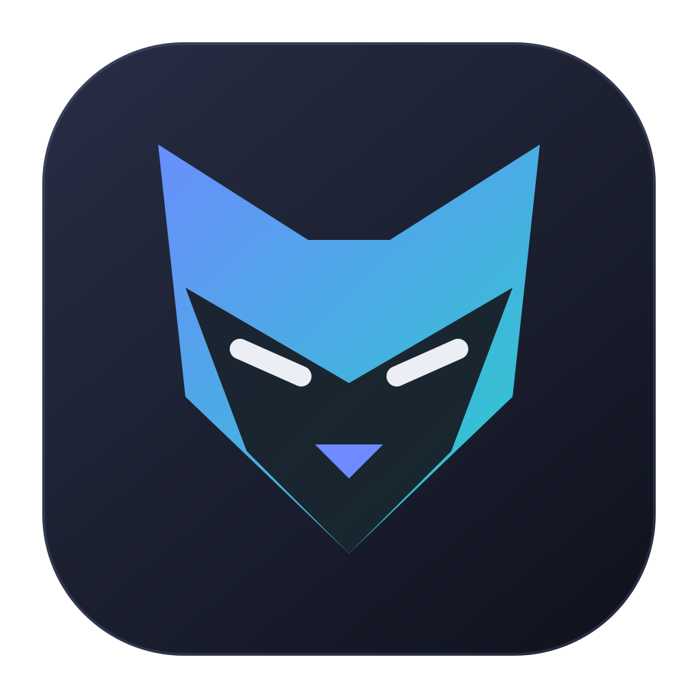

Partez d’un vrai écran.
Inspectez l’arbre d’accessibilité, sélectionnez un composant et associez-le à votre scénario. Les interactions ciblent les éléments, pas des coordonnées fragiles.

cyberfox0.4.0L’ATELIER QA MOBILE · OPEN SOURCE
De la première exploration au dernier test. Créez vos scénarios Android et iOS avec l’IA, rejouez-les sur vos appareils et retrouvez chaque résultat en image.
Application de bureau · MIT · Français / English
01 / WORKFLOW
Un scénario partagé, des sélecteurs propres à chaque OS. Vous gardez le contrôle de ce qui est créé, exécuté et vérifié.
Inspectez l’arbre d’accessibilité, sélectionnez un composant et associez-le à votre scénario. Les interactions ciblent les éléments, pas des coordonnées fragiles.
Codex ou Copilot explore les appareils connectés et propose un scénario à valider. Mode interactif ou Auto-approve pour les questions et la création de variables fournies.
Lancez une campagne, examinez les étapes et revoyez les captures. Exportez les résultats en texte, CSV, Markdown ou Confluence.
02 / INSIDE CYBERFOX
Vos scénarios à gauche, votre travail au centre, les appareils à droite. Un espace redimensionnable pour rester concentré sur le parcours.
Captures réelles de l’aperçu Cyberfox, avec une application fictive et des résultats de démonstration. Aucun compte ni contenu métier réel.
03 / BUILT FOR QA
Un clic réussi n’est pas une assertion réussie. Cyberfox distingue ce qui a été observé, ce qui a été exécuté et ce qui a réellement été vérifié.
Historique persistant, étapes bloquantes, préconditions et résultats séparés par OS.
Captures, liens observés et compteurs par plateforme. Les détails s’ouvrent sans perdre la vue d’ensemble.
Scénarios, variables et résultats sont enregistrés localement. L’IA utilise votre compte fournisseur et lui transmet le contexte nécessaire à l’exploration.
04 / GET CYBERFOX
Gratuit, open source, sans compte Cyberfox. Connectez vos appareils et votre fournisseur IA si vous souhaitez la création assistée.
Lire les nouveautés de la 0.4.0 ↗Mac M1 et suivants · Installateur DMG
Télécharger Cyberfox ↓Signature locale ad hoc, sans notarisation Apple. macOS peut demander une autorisation dans Réglages Système → Confidentialité et sécurité.
Windows, Linux ou Intel ? Développer depuis les sources ↗05 / GOOD TO KNOW
Android : SDK Platform Tools, JDK, débogage USB et appareil autorisé. iOS : sur Mac, Xcode et WebDriverAgent ; un iPhone physique nécessite une signature du runner. Les simulateurs doivent être démarrés. Le diagnostic intégré guide la configuration.
Oui, via les composants accessibles exposés à Appium sur Android et iOS. La stabilité du scénario dépend de l’accessibilité et des identifiants fournis par l’application. Cyberfox gère notamment les changements de champ au focus observés sur iOS.
Non. Vous pouvez créer et exécuter vos scénarios manuellement. L’exploration assistée nécessite votre authentification Codex ou GitHub Copilot ; les limites et conditions du fournisseur s’appliquent. Auto-approve ne remplace pas la validation finale de la proposition.
Le projet et les captures sont enregistrés sur votre machine. Une exploration ou une analyse IA transmet le contexte concerné au fournisseur choisi. Ce site ne contient ni traceur publicitaire ni mesure d’audience.